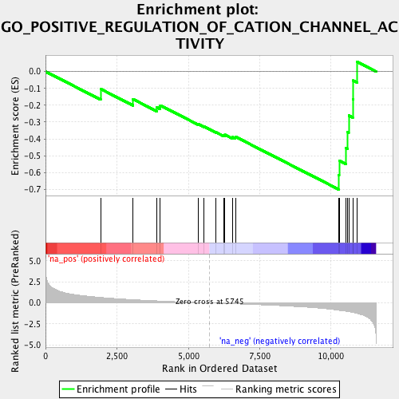
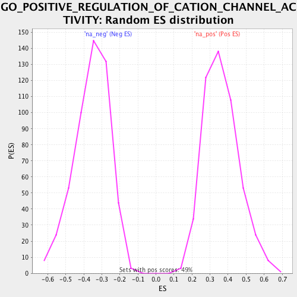

| | | Dataset | RG_nDM |
| Phenotype | NoPhenotypeAvailable |
| Upregulated in class | na_neg |
| GeneSet | GO_POSITIVE_REGULATION_OF_CATION_CHANNEL_ACTIVITY |
| Enrichment Score (ES) | -0.70037866 |
| Normalized Enrichment Score (NES) | -1.9646469 |
| Nominal p-value | 0.0 |
| FDR q-value | 0.028202537 |
| FWER p-Value | 0.235 |
Table: GSEA Results Summary

Fig 1: Enrichment plot: GO_POSITIVE_REGULATION_OF_CATION_CHANNEL_ACTIVITY
Profile of the Running ES Score & Positions of GeneSet Members on the Rank Ordered List
| PROBE | GENE SYMBOL | GENE_TITLE | RANK IN GENE LIST | RANK METRIC SCORE | RUNNING ES | CORE ENRICHMENT | | 1 | STIM2 | | | 1931 | 0.650 | -0.1036 | No |
| 2 | TMEM110 | | | 3063 | 0.384 | -0.1639 | No |
| 3 | GSTO1 | | | 3900 | 0.244 | -0.2124 | No |
| 4 | GSTM2 | | | 4017 | 0.222 | -0.2008 | No |
| 5 | JPH2 | | | 5358 | 0.043 | -0.3125 | No |
| 6 | AKAP7 | | | 5554 | 0.021 | -0.3273 | No |
| 7 | BMP4 | | | 5962 | -0.025 | -0.3601 | No |
| 8 | CALM3 | | | 6255 | -0.061 | -0.3794 | No |
| 9 | CALM2 | | | 6285 | -0.065 | -0.3756 | No |
| 10 | CALM1 | | | 6543 | -0.095 | -0.3885 | No |
| 11 | ASPH | | | 6650 | -0.110 | -0.3869 | No |
| 12 | STIM1 | | | 10274 | -0.876 | -0.6148 | Yes |
| 13 | PKD2 | | | 10284 | -0.882 | -0.5295 | Yes |
| 14 | GALR2 | | | 10521 | -0.986 | -0.4535 | Yes |
| 15 | PLCG2 | | | 10575 | -1.017 | -0.3588 | Yes |
| 16 | RNF207 | | | 10620 | -1.040 | -0.2610 | Yes |
| 17 | CTSS | | | 10763 | -1.129 | -0.1630 | Yes |
| 18 | HTT | | | 10781 | -1.137 | -0.0534 | Yes |
| 19 | CACNB2 | | | 10915 | -1.250 | 0.0573 | Yes |
Table: GSEA details [plain text format]

Fig 2: GO_POSITIVE_REGULATION_OF_CATION_CHANNEL_ACTIVITY: Random ES distribution
Gene set null distribution of ES for GO_POSITIVE_REGULATION_OF_CATION_CHANNEL_ACTIVITY